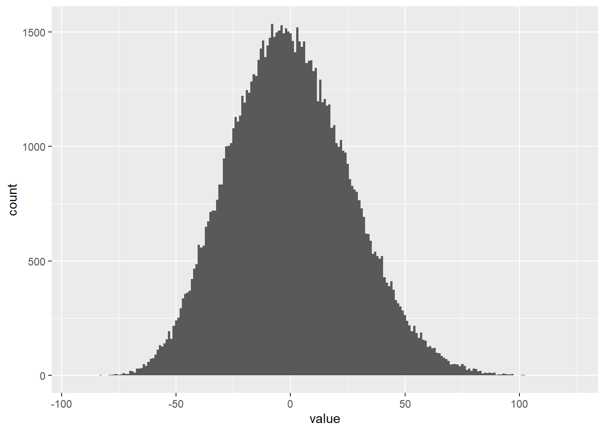

Last updated: 2021-10-14
Checks: 7 0
Knit directory: Project_in_Bioinformatics_E21/
This reproducible R Markdown analysis was created with workflowr (version 1.6.2). The Checks tab describes the reproducibility checks that were applied when the results were created. The Past versions tab lists the development history.
Great! Since the R Markdown file has been committed to the Git repository, you know the exact version of the code that produced these results.
Great job! The global environment was empty. Objects defined in the global environment can affect the analysis in your R Markdown file in unknown ways. For reproduciblity it’s best to always run the code in an empty environment.
The command set.seed(20210919) was run prior to running the code in the R Markdown file. Setting a seed ensures that any results that rely on randomness, e.g. subsampling or permutations, are reproducible.
Great job! Recording the operating system, R version, and package versions is critical for reproducibility.
Nice! There were no cached chunks for this analysis, so you can be confident that you successfully produced the results during this run.
Great job! Using relative paths to the files within your workflowr project makes it easier to run your code on other machines.
Great! You are using Git for version control. Tracking code development and connecting the code version to the results is critical for reproducibility.
The results in this page were generated with repository version d8a1e1a. See the Past versions tab to see a history of the changes made to the R Markdown and HTML files.
Note that you need to be careful to ensure that all relevant files for the analysis have been committed to Git prior to generating the results (you can use wflow_publish or wflow_git_commit). workflowr only checks the R Markdown file, but you know if there are other scripts or data files that it depends on. Below is the status of the Git repository when the results were generated:
Ignored files:
Ignored: .Rhistory
Ignored: .Rproj.user/
Ignored: analysis/.Rhistory
Untracked files:
Untracked: code/Rhea-master/
Untracked: data/get_seq.r
Untracked: data/~$sampleData.xlsx
Untracked: oil_spill.nwk
Untracked: treemaker.sh
Note that any generated files, e.g. HTML, png, CSS, etc., are not included in this status report because it is ok for generated content to have uncommitted changes.
These are the previous versions of the repository in which changes were made to the R Markdown (analysis/6_alpha_diversity_tests.Rmd) and HTML (docs/6_alpha_diversity_tests.html) files. If you’ve configured a remote Git repository (see ?wflow_git_remote), click on the hyperlinks in the table below to view the files as they were in that past version.
| File | Version | Author | Date | Message |
|---|---|---|---|---|
| Rmd | d8a1e1a | stinekrye | 2021-10-14 | wflow_publish(c(“analysis/5_normalization_alpha_diversity.Rmd”, |
The purpose of this script is to explore the alpha diversity
library(tidyverse)
library(readxl)
library(phyloseq)
library(vegan)
library(rstatix)
sampleData <- read_excel("./data/sampleData.xlsx") %>% column_to_rownames(., var = "Samples")
asvTable <- read.delim("./data/oil_ASVtable.txt", sep = "\t", row.names = "ASVs", check.names = F) #%>% select(., -'row.names')
taxaId <- read.delim("./data/oil_ASVtaxid.txt", sep = "\t", row.names = "ASVs") %>% select(., -'row.names')
alpha <- read.delim("./code/Rhea-master/2.Alpha-Diversity/alpha-diversity.TAB", sep = "\t", check.names = F, row.names = 1)
alphaSampleData <- merge(sampleData, alpha, by = 0)
alphaSampleData <- column_to_rownames(alphaSampleData, "Row.names")
sampleData <- sampleData %>% filter(rownames(.) %in% rownames(alpha))
asvTable <- as.data.frame(t(asvTable)) %>% filter(rownames(.) %in% rownames(alpha))
asvTable <- t(otu_table(asvTable, taxa_are_rows = F))They have same sample name, so they can be dealt with easily
# test <- alphaSampleData %>% mutate("Name_wo_dups" = substr(sampleName, 1, nchar(sampleName)-2))
alphaSampleData_wo_dub <- alphaSampleData %>% group_by(sampleName) %>% summarize(location = location,
days = days,
oil = oil,
lightDark = lightDark,
replicate = replicate,
QPCRCopies = mean(na.omit(QPCRCopies)),
QPCR_SD = mean(na.omit(QPCR_SD)),
Richness = mean(na.omit(Richness)),
Normalized.Richness = mean(na.omit(Normalized.Richness)),
Effective.Richness = mean(na.omit(Effective.Richness)),
Shannon.Index = mean(na.omit(Shannon.Index)),
Shannon.Effective = mean(na.omit(Shannon.Effective)),
Simpson.Index = mean(na.omit(Simpson.Index)),
Simpson.Effective = mean(na.omit(Simpson.Effective)),
Evenness = mean(na.omit(Evenness)))`summarise()` has grouped output by 'sampleName'. You can override using the `.groups` argument. # Is it ok to deal with SD like this?
alphaSampleData_wo_dub <- alphaSampleData_wo_dub %>% distinct()Do I have to average the value of those as well? (I mean the samples with name differ by only _1 vs _2)
Motivation: Last weeks plots showed a large variation in the blanks and a small variance in all the other samples Test type: I have choosen to perform a permutation test. Even though the distribution og alpha-diversity values are roughly bell shaped, the sample counts are just too small to ensure high power.
testdata1 <- alphaSampleData_wo_dub %>% select(c("oil", "Shannon.Effective"))Adding missing grouping variables: `sampleName`oilGr <- testdata1$Shannon.Effective[testdata1$oil != "blank"]
oilMedian <- mean(na.omit(oilGr))
blankGr <- testdata1$Shannon.Effective[testdata1$oil == "blank"]
blankMedian <- mean(na.omit(blankGr))
true_value <- blankMedian - oilMedian
oil <- testdata1$oil
alpha <- testdata1$Shannon.Effective
r <- rep(NA,100000)
for (i in 1:length(r)) {
a <- sample(alpha)
oilGr <- a[oil != "blank"]
oilMedian <- mean(na.omit(oilGr))
blankGr <- a[oil == "blank"]
blankMedian <- mean(na.omit(blankGr))
r[i] <- blankMedian - oilMedian
if(i%%10000==0) { # Progress tracker
cat(i, "\n")
flush.console()
}
}10000
20000
30000
40000
50000
60000
70000
80000
90000
100000 pd <- tibble(i=1:length(r), value=r)The plot is centered around the mean. Approximate null distribution
How does this look? If the mean is used we get a pretty bell shape. Median gives an ugly figure
pd %>%
ggplot(aes(x=value)) +
geom_histogram(binwidth = 1)+
NULL
Calculate the probability of observing the true value
sum(abs(permuted >= obs)) This will give us the p value if we divide it by the total number of permutations
I will not do sum(permuted >= obs) * 2 because the tails look unsymmetrical
extreme <- sum(abs(pd$value) >= true_value)
pval <- (extreme + 1)/length(r)
pval[1] 1e-05We reject the H0 of no difference between the medians of the two groups.
I will try to use repeated measure ANOVA to compare the alpha diversity at different locations
testdata2 <- alphaSampleData_wo_dub %>% select(c("location", "lightDark", "oil", "Shannon.Effective"))Adding missing grouping variables: `sampleName`testdata2 %>% group_by(location, lightDark) %>% identify_outliers(variable = "Shannon.Effective")# A tibble: 14 x 7
location lightDark sampleName oil Shannon.Effecti~ is.outlier is.extreme
<chr> <chr> <chr> <chr> <dbl> <lgl> <lgl>
1 deep dark GF_deep_4_bl~ blank 178. TRUE FALSE
2 deep dark GF_deep_4_bl~ blank 191. TRUE FALSE
3 sediment dark GF_sediment_~ blank 509. TRUE FALSE
4 sediment dark GF_sediment_~ blank 551. TRUE FALSE
5 surface dark GF_surface_3~ blank 566. TRUE TRUE
6 surface dark GF_surface_3~ blank 453. TRUE TRUE
7 surface dark GF_surface_4~ blank 407. TRUE TRUE
8 surface dark GF_surface_4~ blank 411. TRUE TRUE
9 surface dark GF_surface_4~ MGO 224. TRUE FALSE
10 surface light GF_surface_3~ blank 304. TRUE FALSE
11 surface light GF_surface_3~ blank 306. TRUE FALSE
12 surface light GF_surface_4~ blank 327. TRUE FALSE
13 surface light GF_surface_4~ blank 343. TRUE FALSE
14 surface light GF_surface_4~ MGO 284. TRUE FALSE # qqnorm(log10(testdata2$Shannon.Effective), pch = 1, frame = FALSE)
# qqline(log10(testdata2$Shannon.Effective), col = "steelblue", lwd = 2)
# shericity <- anova_test(testdata2, formula = Shannon.Effective ~ as.factor(location))Assumptions No outliers -> use identify_outliers Normaldistributed -> The data is not normally distributed at all. the log10 numbers are closer
Check for outliers:
t <- testdata2 %>% group_by(location) %>% identify_outliers(variable = "Shannon.Effective")
extreme <- t$sampleName[t$is.extreme == TRUE]
testdata2 <- testdata2 %>% filter(!sampleName %in% extreme)We have some extreme outliers which has to be removed I guess they have to be included again?
Check for normal distribution:
testdata2 <- testdata2 %>% mutate("Shannon.Effective.Log10" = log10(Shannon.Effective))
testdata2 %>% group_by(location) %>% shapiro_test(Shannon.Effective.Log10)# A tibble: 3 x 4
location variable statistic p
<chr> <chr> <dbl> <dbl>
1 deep Shannon.Effective.Log10 0.962 0.310
2 sediment Shannon.Effective.Log10 0.933 0.267
3 surface Shannon.Effective.Log10 0.959 0.0537If we log10 transform the data almost all groups are normal distributed. If the surface group is combined into one all groups are normal distributed
sessionInfo()R version 4.1.1 (2021-08-10)
Platform: x86_64-w64-mingw32/x64 (64-bit)
Running under: Windows 10 x64 (build 19042)
Matrix products: default
locale:
[1] LC_COLLATE=Danish_Denmark.1252 LC_CTYPE=Danish_Denmark.1252
[3] LC_MONETARY=Danish_Denmark.1252 LC_NUMERIC=C
[5] LC_TIME=Danish_Denmark.1252
attached base packages:
[1] stats graphics grDevices utils datasets methods base
other attached packages:
[1] rstatix_0.7.0 vegan_2.5-7 lattice_0.20-44 permute_0.9-5
[5] phyloseq_1.36.0 readxl_1.3.1 forcats_0.5.1 stringr_1.4.0
[9] dplyr_1.0.7 purrr_0.3.4 readr_2.0.1 tidyr_1.1.3
[13] tibble_3.1.4 ggplot2_3.3.5 tidyverse_1.3.1 workflowr_1.6.2
loaded via a namespace (and not attached):
[1] colorspace_2.0-2 ellipsis_0.3.2 rio_0.5.27
[4] rprojroot_2.0.2 XVector_0.32.0 fs_1.5.0
[7] rstudioapi_0.13 farver_2.1.0 fansi_0.5.0
[10] lubridate_1.7.10 xml2_1.3.2 codetools_0.2-18
[13] splines_4.1.1 knitr_1.34 ade4_1.7-18
[16] jsonlite_1.7.2 broom_0.7.9 cluster_2.1.2
[19] dbplyr_2.1.1 compiler_4.1.1 httr_1.4.2
[22] backports_1.2.1 assertthat_0.2.1 Matrix_1.3-4
[25] fastmap_1.1.0 cli_3.0.1 later_1.3.0
[28] htmltools_0.5.2 tools_4.1.1 igraph_1.2.6
[31] gtable_0.3.0 glue_1.4.2 GenomeInfoDbData_1.2.6
[34] reshape2_1.4.4 Rcpp_1.0.7 carData_3.0-4
[37] Biobase_2.52.0 cellranger_1.1.0 jquerylib_0.1.4
[40] vctrs_0.3.8 Biostrings_2.60.2 rhdf5filters_1.4.0
[43] multtest_2.48.0 ape_5.5 nlme_3.1-152
[46] iterators_1.0.13 xfun_0.26 openxlsx_4.2.4
[49] rvest_1.0.1 lifecycle_1.0.0 zlibbioc_1.38.0
[52] MASS_7.3-54 scales_1.1.1 hms_1.1.0
[55] promises_1.2.0.1 parallel_4.1.1 biomformat_1.20.0
[58] rhdf5_2.36.0 yaml_2.2.1 curl_4.3.2
[61] stringi_1.7.4 highr_0.9 S4Vectors_0.30.0
[64] foreach_1.5.1 BiocGenerics_0.38.0 zip_2.2.0
[67] GenomeInfoDb_1.28.4 rlang_0.4.11 pkgconfig_2.0.3
[70] bitops_1.0-7 evaluate_0.14 Rhdf5lib_1.14.2
[73] labeling_0.4.2 tidyselect_1.1.1 plyr_1.8.6
[76] magrittr_2.0.1 R6_2.5.1 IRanges_2.26.0
[79] generics_0.1.0 DBI_1.1.1 pillar_1.6.2
[82] haven_2.4.3 whisker_0.4 foreign_0.8-81
[85] withr_2.4.2 mgcv_1.8-36 abind_1.4-5
[88] survival_3.2-11 RCurl_1.98-1.5 modelr_0.1.8
[91] crayon_1.4.1 car_3.0-11 utf8_1.2.2
[94] tzdb_0.1.2 rmarkdown_2.11 grid_4.1.1
[97] data.table_1.14.0 git2r_0.28.0 reprex_2.0.1
[100] digest_0.6.27 httpuv_1.6.3 stats4_4.1.1
[103] munsell_0.5.0